전파전자기능사(구) (2009-01-18 기출문제)
1과목: 임의 구분
1. 다음 중 무선 송신기에서 고주파 증폭기의 주 역할로 가장 적합한 것은?
- 변조
- 주파수 체배
- 전력증폭
- 저항 분배
(정답률: 알수없음)

2. 다음 중 AM 송신기의 완충 증폭부에 대한 설명으로 적합하지 않은 것은?
- 주로 발진기 다음 단에 둔다.
- 발진기와의 결합은 밀결합 한다.
- 부하변동이 발진기에 미치는 영향을 방지한다.
- 효율이 낮은 A급 또는 AB급으로 안정하게 동작시킨다.
(정답률: 알수없음)
3. 수신기의 입력주파수가 3150[kHz]이고 중간주파수가 455[kHz] 일 때의 영상주파수는 ?
- 2340[kHz]
- 2695[kHz]
- 3650[kHz]
- 4060[kHz]
(정답률: 알수없음)
4. 다음 급전선의 전압 정재파비(VSWR)에 관한 설명으로 적합하지 않은 것은?
- 반사전압이 클수록 정재파비는 작다.
- 정재파비를 구함으로써 전압 반사계수를 구할 수 있다.
- 정재파비를 구함으로써 부하의 정합상태를 알 수 있다.
- 급전선 상에서 전압의 최대값, 최소값을 측정함으로써 정재파비를 구할 수 있다.
(정답률: 알수없음)
5. 체배단의 출력전류 왜율이 50[%]이다. 이 때 제2고조파의 전류진폭이 4[mA]이고 제3고조파의 전류진폭이 3[mA]일 경우 입력단 기본파의 전류진폭은 몇 [mA] 인가?
- 10[mA]
- 7[mA]
- 5[mA]
- 3[mA]
(정답률: 알수없음)
6. 전리층 통신에서 최고사용주파수(MUF)가 10[MHz] 일 때 최적운용주파수로 가장 적합한 것은?
- 6[kHz]
- 8.5[kHz]
- 12[kHz]
- 13.5[kHz]
(정답률: 알수없음)
7. 다음 중 마이크로파 통신의 특징으로 적합하지 않은 것은?
- 주파수 대역폭이 넓어서 광대역 또는 다중통신을 할 수 있다.
- 공중선의 이득이 크고 지향성을 좋게 할 수 있다.
- 외부 잡음의 영향이 비교적 작다.
- 파장이 짧아서 전리층을 이용한 원거리 통신에 유리하다.
(정답률: 알수없음)
8. λ/4 수직접지 안테나의 길이가 10[m]인 경우 고유주파수는 약 몇 [MHz] 인가?
- 7.5[MHz]
- 10[MHz]
- 15[MHz]
- 21.5[MHz]
(정답률: 알수없음)
9. 신호주파수가 4[kHz]이고 최대주파수 편이가 ±16[kHz] 일 때 변조지수는 얼마인가?
- 1
- 4
- 8
- 16
(정답률: 알수없음)
10. 다음 중 마이크로파 통신의 중계방식에 속하지 않은 것은?
- 무 급전 중계방식
- 간접 중계방식
- 검파 중계방식
- 헤테로다인 중계방식
(정답률: 알수없음)
11. 다음 중 AM 송신기에서 발진 주파수의 변동 원인과 가장 관계가 적은 것은?
- 발진기 주위의 온도변화
- 발진회로의 부하변동
- 전력 증폭기의 증폭도 변동
- 전원 전압의 변동
(정답률: 알수없음)
12. 수직접지 안테나의 실효고(he)는?
- λ / π
- λ / 2π
- λ / 3π
- λ / 4π
(정답률: 알수없음)
13. 다음 중 SSB 통신방식의 특성에 대한 설명으로 적합하지 않은 것은?
- 비트방해가 많이 발생 한다.
- 송신기의 소비전력이 DSB 방식보다 작다.
- 송수신기의 회로구성이 DSB 방식보다 복잡하다.
- 선택성 페이딩의 영향은 DSB 방식보다 적게 받는다.
(정답률: 알수없음)
14. 신호전압이 0.5[V]이고, 잡음전압이 0.5[mV]이면 SN비는 몇 [dB] 인가?
- 10[dB]
- 20[dB]
- 40[dB]
- 60[dB]
(정답률: 알수없음)
15. AM 수신기의 감도 측정시 사용되는 측정기기가 아닌 것은?
- SSG
- 이상기
- 의사 공중선
- 저주파발진기
(정답률: 알수없음)
16. 다음 중 100[MHz]의 고조파에 해당하는 것은?
- 10[kHz]
- 150[kHz]
- 200[kHz]
- 250[kHz]
(정답률: 알수없음)
17. 다음 중 수신기의 고주파 증폭회로의 역할에 속하지 않는 것은?
- S/N 개선
- 수신기의 감도 향상
- 충실도 개선
- 영상주파수 선택도의 개선
(정답률: 알수없음)
18. 다음 중 위성 지구국의 저잡음 안테나로 주로 사용되는 것은?
- 휩안테나
- 무지향성안테나
- 카세그레인 안테나
- 반파장 다이폴 안테나
(정답률: 알수없음)
19. 정지위성의 고도는 적도 상공 약 몇 [km] 인가?
- 19500[km]
- 27300[km]
- 36000[km]
- 42400[km]
(정답률: 알수없음)
20. 다음 중 위성통신의 장점에 대한 설명으로 적합하지 않은 것은?
- 동보통신이 가능하다.
- 전송지연이 발생하지 않는다.
- 광대역 통신이 가능하다.
- 넓은 범위의 지역에서 통신이 가능하다.
(정답률: 알수없음)
2과목: 임의 구분
21. 다음 문장의 가장 적합한 국역은?
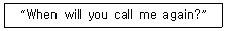
- 귀국에서 국제통신이 가능합니까?
- 귀국은 여객선입니까?
- 귀국은 전보취급소입니까?
- 귀국은 언제 당국을 재차 호출하겠습니까?
(정답률: 알수없음)
22. 다음 문장의 ( ) 안에 가장 적합한 것은?
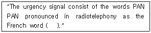
- panne panne
- pan pan
- pent pent
- pang pang
(정답률: 알수없음)
23. 다음 문자의 밑줄친 부분과 가장 적합한 것은?
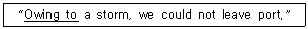
- In spite of
- According to
- By
- On account of
(정답률: 알수없음)
24. 다음 용어의 풀이가 틀린 것은?
- SOLAS : Safety of Land and Sea
- IMO : International Maritime Organization
- SAR : Search and Rescue
- GMDSS : Global Maritime Distress and Safety System
(정답률: 알수없음)
25. 다음 문장의 ( ) 안에 가장 적절한 것은?
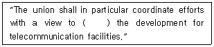
- harmonizing
- beginning
- transmitting
- receiving
(정답률: 알수없음)
26. 다음의 통화가 곤란할 때 “feet"를 음성통화표로 어떻게 읽는가?
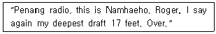
- foxtrot, echo, echo, tango
- fox, each, echo, text
- fire, echo, echo, toronto
- fox, eel, eve, tank
(정답률: 알수없음)
27. 다음 문장의 가장 적합한 국역은?
- 그 곳의 수신상태는 어떠합니까?
- 그 곳의 송신상태는 어떠합니까?
- 그 곳은 수신증을 보낼 수 있습니까?
- 그 곳은 송신증을 보낼 수 있습니까?
(정답률: 알수없음)
28. 다음 문장의 밑줄 친 부분의 적합한 해석은?
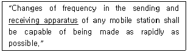
- 수신장치
- 수신파형
- 수신신호
- 수신시간
(정답률: 알수없음)
29. 다음 문장을 가장 적당하게 국역한 것은?
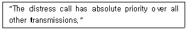
- 조난통보는 다른 통신에 비하여 우선 순위로 될 수 있다.
- 조난호출은 다른 통신을 먼저 전송할 수 있다.
- 조난통보는 다른 통신에 비해 우선권을 가질 수 있다.
- 조난호출은 다른 어떠한 전송보다도 절대적인 우선 순위를 갖는다.
(정답률: 알수없음)
30. 다음 문장의 ( ) 안에 가장 적합한 것은?
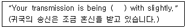
- interfered
- troubled
- varied
- estimated
(정답률: 알수없음)
31. 전권대표 회의에 대하여 회원국의 정부에 의하여 파견된 자에 대한 용어는?
- Delegate
- Expert
- Observer
- Agent
(정답률: 알수없음)
32. 다음 문장이 뜻하는 것은?
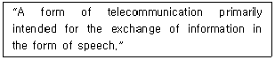
- Telegraphy
- Telephony
- Telecommunication
- Telegram
(정답률: 알수없음)
33. 다음 문장의 가장 적합하게 국역한 것은?
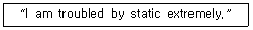
- 나는 강한 혼신 방해를 받고 있다.
- 나는 약한 혼신 방해를 받고 있다.
- 나는 약한 공전 방해를 받고 있다.
- 나는 매우 강한 공전 방해를 받고 있다.
(정답률: 알수없음)
34. 다음 질문의 가장 적합한 답변은?
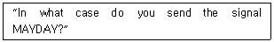
- In case of urgency
- In case of danger
- In case of distress
- In case of alarm
(정답률: 알수없음)
35. 다음 질문에 대한 대답으로 가장 적절한 것은?
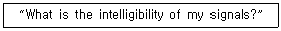
- The intelligibility of your signals is severely.
- The intelligibility of your signals is powerful.
- The intelligibility of your signals is good.
- The intelligibility of your signals is static.
(정답률: 알수없음)
36. 다음 무선 전화 통화의 절차 용어는?
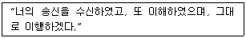
- WILCO
- INTERCO
- VERIFY
- BREAK
(정답률: 알수없음)
37. 다음 문장에서 밑줄친 부분의 해석이 가장 적합한 것은?
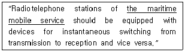
- 해양동력장치
- 무선표시업무
- 해상이동업무
- 해안자동탐색
(정답률: 알수없음)
38. 다음 국문을 영역한 문장에서 ( )안에 가장 적합한 것은?
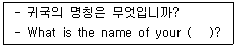
- device
- vessel
- ship
- station
(정답률: 알수없음)
39. 다음 중 영문 음성통화표에 의한 발음으로 틀린 것은?
- F : FOKS TROT
- E : ECK OH
- L : LEE MAH
- T : TAH IM
(정답률: 알수없음)
40. 다음의 통신약어 중 “도착예정시간”을 나타내는 것은?
- ETD
- ETA
- RPT
- SLT
(정답률: 알수없음)
3과목: 임의 구분
41. 다음 ( ) 안에 들어갈 내용으로 가장 적합한 것은?
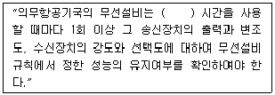
- 100
- 500
- 1천
- 3천
(정답률: 알수없음)
42. 다음 중 육상의 특정지점에 개설하여 우주국 또는 위성방송국과 고정업무를 하는 지구국은?
- 기지지구국
- 해안지구국
- 일반지구국
- 육상지구국
(정답률: 알수없음)
43. 다음 중 무선국의 허가증에 적을 사항이 아닌 것은?
- 시설자 주소
- 무선국의 목적
- 허가연월일 및 허가번호
- 호출부호 또는 호출명칭
(정답률: 알수없음)
44. “특정한 주파수를 이용할 수 있는 권리를 특정인에게 주는 것”로 정의되는 것은?
- 주파수분배
- 주파수할당
- 주파수지정
- 주파수재배치
(정답률: 알수없음)
45. 다음 중 국제전기통신연합의 최고 의사결정기관은?
- 사무총국
- 이사회
- 전권위원회
- 전기통신개발회의
(정답률: 알수없음)
46. 다음 중 전령통신의 취약점이 아닌 것은?
- 신속성이 결여되어 있다.
- 계절 또는 기후의 영향을 받는다.
- 경제성이 없다.
- 안전성이 없다.
(정답률: 알수없음)
47. 다음 중 세계 해상조난 및 안전제도는?
- CCITT
- ITT
- EPIRB
- GMDSS
(정답률: 알수없음)
48. 다음 중 GMDSS 적용을 받는 선박이 갖추어야 하는 무선설비가 아닌 것은?
- 단파대 디지털 선택 호출장치
- 초단파대 무선전화
- 네비텍스 수신기
- 인마세트 고기능 그룹 호출 수신기
(정답률: 알수없음)
49. 다음 중 통신보안의 제1차적 책임은?
- 전문 기안자
- 통신 이용자
- 전문 통제권자
- 기관의 장
(정답률: 알수없음)
50. 30[MHz] 초과 300[MHz]이하의 주파수 범위를 무슨 주파수대라 하는가?
- HF
- VHF
- UHF
- SHF
(정답률: 알수없음)
51. 다음 ( ) 안에 들어갈 내용으로 가장 적합한 것은?
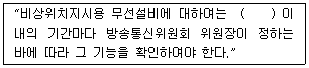
- 1년
- 2년
- 3년
- 4년
(정답률: 알수없음)
52. 다음 중 선박국이 그 선박이 소재하는 해안국의 통신권에 그 뜻을 통지하지 않아도 되는 경우는?
- 통신권을 떠나려고 할 때
- 통신권에 들어 왔을 때
- 출항으로 개국하려고 할 때
- 정기선의 선박으로서 그 선박이 정시에 입출항하는 경우
(정답률: 알수없음)
53. “전파의 전파 특성을 이용하여 위치·속도 및 기타 사물의 특징에 관한 정보를 취득하는 것“으로 정의 되는 것은?
- 무선 항행
- 무선 탐지
- 무선 방향 탐지
- 무선 측위
(정답률: 알수없음)
54. 다음 중 경보신호를 사용할 수 있는 경우가 아닌 것은?
- 조난호출 또는 조난통보
- 승객 또는 승무원이 선외로 떨어진 경우에 다른 선박에 구조를 구하기 위한 긴급호출
- 안전신호를 먼저 보내고 행하는 긴급 폭풍 경보
- 선박국이 송신하는 안전 통보를 해안국에서 수신하여 그 통보를 다시 송신하는 경우
(정답률: 알수없음)
55. 다음 ( ) 안에 들어갈 내용으로 가장 적합한 것은?
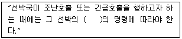
- 선장
- 책임자
- 통신장
- 갑판장
(정답률: 알수없음)
56. 다음 ( ) 안에 들어갈 내용으로 가장 적합한 것은?
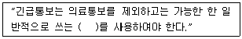
- 기호
- 부호
- 용어
- 약호
(정답률: 알수없음)
57. 다음 ( ) 안에 들어갈 내용으로 가장 적합한 것은?
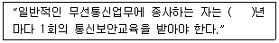
- 1
- 2
- 3
- 5
(정답률: 알수없음)
58. 통신수단에 의하여 비밀이 직접 또는 간접으로 누설되는 것을 미리 방지하거나 지연시키는 방책을 말하는 것은?
- 송신보안
- 자재보안
- 통신보안
- 약호보안
(정답률: 알수없음)
59. 다음 ( ) 안에 들어갈 내용으로 가장 적합한 것은?
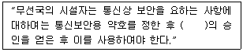
- 국가정보원장
- 중앙전파관리소장
- 지식경제부장관
- 방송통신위원회 위원장
(정답률: 알수없음)
60. 국제전기통신업무를 취급하는 제3종국 선박국의 운용시간으로 가장 적합한 것은?
- 상시
- 16시간
- 1일 8시간
- 1일 4시간 이하
(정답률: 알수없음)